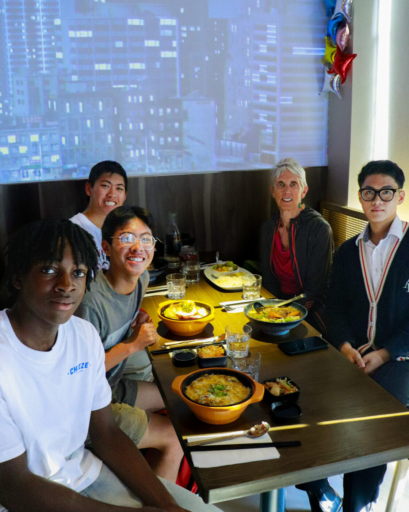
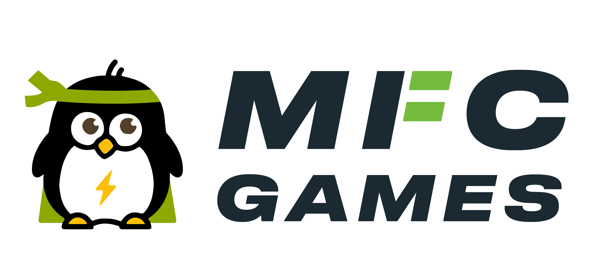

MFC Games
Website Administrator · Calgary, AB · May 2024 - August 2024
Maintained and updated the organization's website with blog posts, event information, and photo galleries, ensuring visitors had accurate, up-to-date event information throughout the season.
Collaborated with organizers to plan website updates, improving site navigation and visual appeal for attendees, and communicated regularly with organizers on content and design priorities to keep messaging consistent across the site.


Web Administration
Content Management